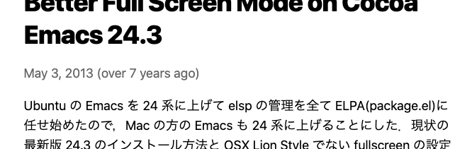

Information Freshness
全てのウェブ上の情報にはその鮮度情報も確認できるようにしておいて欲しいと思う．
何かを調べようとしてググると，それなりの頻度で書かれた日付が記載されていないページに遭遇する．そういう記事は読んだ後に，「で，これは今も使える内容なのか？もっと良い方法が提案されているのでは？」という不安が生まれてよろしくない（まぁ書いてあっても一応調べはするのだが）．
という思いから，このブログも投稿時間を表示するようにしているし，ふと思い立って一年以上前のポストには相対時間を表示するようにした．

初回の投稿後に編集することもあるし，更新時間も表示してもいいかもしれない．
今は事前にビルドした静的ファイルを配信しているので，この相対時間の起点はビルドしたタイミングになってしまう問題がある．気になるようなら Vercel での配信に切り替える予定．Qiita のようにもう少し目立つようにしようかとも思ったが，表現に悩んだので一旦保留している．